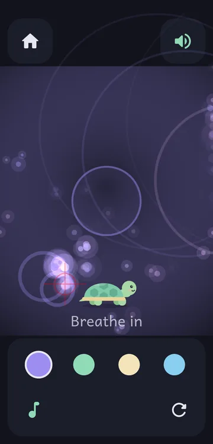
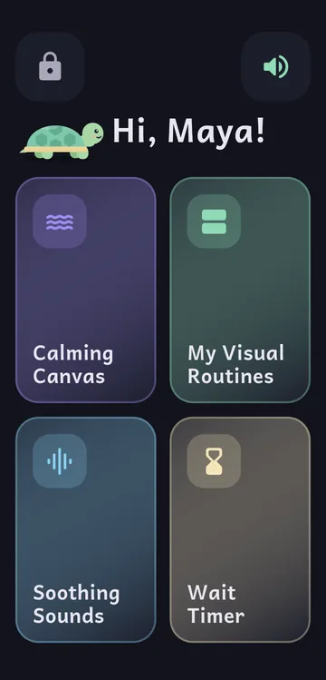
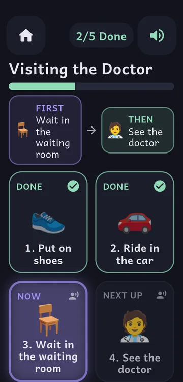
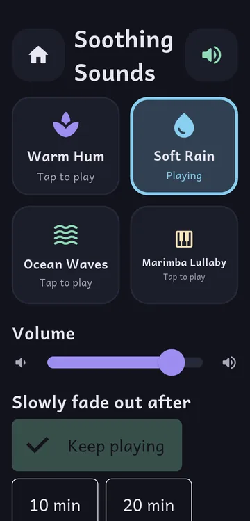
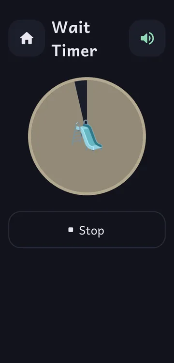
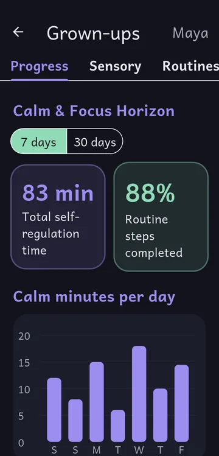

A calm place to play, breathe and get ready for what's next.
Sensory SafeScape helps autistic and sensory-sensitive children (ages 2–10) calm down with gentle, touch-and-glow play, and get through the day's changes with simple picture routines.
- Free
- No ads
- No tracking
- No sign-up
- Works offline
For Android phones and tablets.


Everything is gentle, predictable and in the child's control
Four simple spaces, big buttons, soft colours, and nothing that flashes, buzzes or says "wrong".
Calming Canvas
Touch and drag with one finger, two hands or a whole palm to make soft, glowing waves. A slow breathing ring (4 s in, 6 s out) and Sammy the Turtle breathe along.

Visual Routines
Picture steps for the doctor, dentist, haircut, school, bath and bedtime, with a First / Then strip and short stories read aloud. Make your own with your own photos.

Soothing Sounds
Warm hum, soft rain, ocean waves and a marimba lullaby, all filtered to remove sharp high pitches, with a slow fade-out for bedtime.

Wait Timer
A soft disc slowly shrinks to show "a few more minutes", with a picture of what comes next. No numbers counting down and no alarm, just one low note.
Designed to be sensory-safe
- Dark, low-glare screens with soft pastels; never a white flash
- Low Motion mode, warm Soft Lighting and adjustable particle density
- Every sound pre-filtered below 6, 4 or 2.5 kHz, your choice
- 72 dp touch targets and one-tap mute on every screen
- Errorless: no scores, timers that buzz or "try again"
For parents and therapists
- Settings behind a grown-up check children can't pass
- Build routines with your own photos and words
- Several children, each with their own settings
- Calm minutes, favourite calming modes and routine progress
- One-tap PDF summary to share with an occupational therapist
Private by design
SafeScape stores as little as possible and never sells or shares it.
- No account needed: open the app and play
- No ads, analytics or tracking tools
- No microphone, location or contacts; photos you add never leave the phone
- Optional private cloud backup you can switch off or delete at any time

Sensory SafeScape is an educational and calming tool. It is not a medical device and does not diagnose or treat any condition. It does not replace advice from a doctor or therapist.